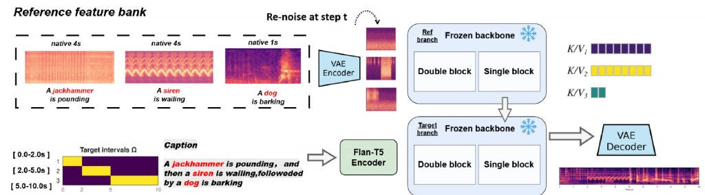
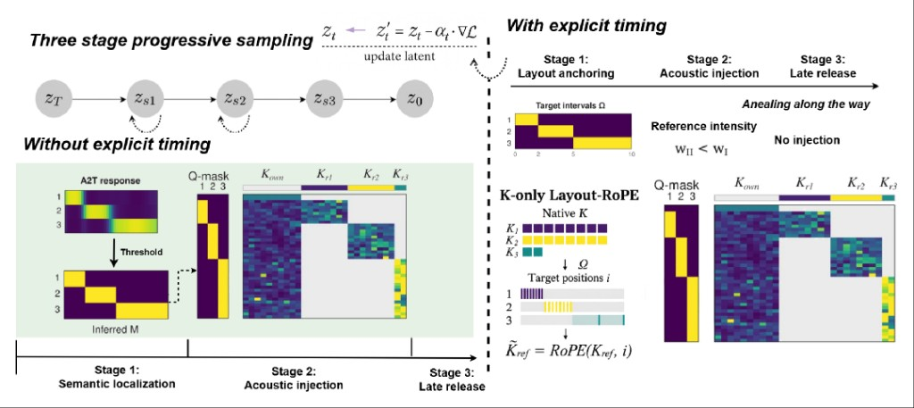

Two cat meows
Background noise, tapping, and cat sounds are interspersed with purring.
Target
Ours
A cat is meowing.
A cat is meowing.
Training-freely and Precisely Enabling Event-level Reference Control Across Text-to-Audio Generation and Editing
Text-to-audio (T2A) diffusion models can sample various sound events from natural language prompt, while precisely achieving fine-grained control over both semantic content and acoustic details remains underexplored. Here, we propose RefAudio, a training-free method that precisely injects event-level acoustic reference into a pre-trained T2A system. We first present the three core requirements of reference-guided T2A: event localization to identify target events, acoustic control to inject reference details, and sample harmonization to ensure global coherence. Correspondingly, along the coarse-to-fine diffusion sampling trajectory, we progressively localize target events by exploiting pre-trained text–audio attention, inject reference acoustic details through gated attention, and harmonize the generated sample with an annealing reference mechanism. Building on this design, we further introduce reference control for the first time in two key settings of text-conditioned audio generation: temporally controlled reference-guided T2A, enabling reference guidance within specified timing intervals, and audio editing, improving tasks across event addition, replacement, and style transfer. Experiments with a state-of-the-art T2A system, Tango-Flux, on real-world and synthetic datasets show that RefAudio faithfully incorporates a variable number of reference events, enabling precise semantic, timing, and acoustic control in audio generation and editing tasks, without additional training or paired data.


A single reference event is placed on the timeline. These clips do not contain speech.
Background noise, tapping, and cat sounds are interspersed with purring.
Dogs and domestic animals make noises.
Animals and birds are making noises in the rural surroundings.
Doors slam and an alarm sounds on a motor vehicle.
Telephone rings can be heard along with humming.
References are placed one after another. One example each for 3, 4, and 5 references.
An engine is idling, and then a dog is barking, then a clock is ticking.
A car horn is honking, then a gun is shooting, and then wind is blowing, and then a sheep is bleating.
A car horn is honking, followed by a drill drilling, then a jackhammer is pounding, then a dog is barking, after that a clock alarm is ringing.
A background reference runs under the events. Reference clips are the original recordings.
A sheep is bleating, with water running in the background, followed by a dog barking.
A siren is wailing, with chainsaw buzzing in the background, followed by a dog barking.
A dog is barking, with a small river flowing in the background, followed by a car horn honking, and then an engine is idling.